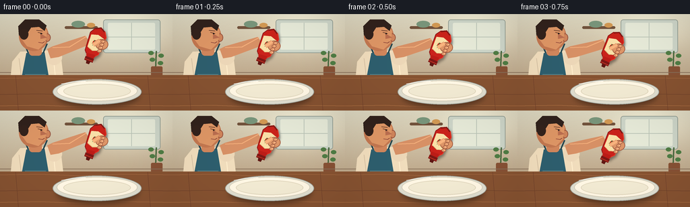

CODING AGENTS AS PIXEL WORLD MODELS
traex/GPT-5.6-Sol · motion_rationality_0027
点击播放 · 原生 RGB 像素
逐轮保存的候选
回放视频、检查图与代码变化。
每份候选均可单独播放。实际图片检查记录在下方工具轨迹中。
候选 01播放与检查图
点击播放 · 原生 RGB 像素
展开代码变化
--- 上一保存版本
+++ 本次保存版本
@@ -0,0 +1,256 @@
+from pathlib import Path
+import math
+import numpy as np
+from PIL import Image, ImageDraw, ImageFilter
+import artifact_io
+
+W,H,N = 256,144,20
+S=4
+WS,HS=W*S,H*S
+rng=np.random.default_rng(27)
+
+def sc(v): return int(round(v*S))
+def pts(seq): return [(sc(x),sc(y)) for x,y in seq]
+def ell(draw, box, fill, outline=None, width=1):
+ draw.ellipse(tuple(sc(v) for v in box), fill=fill, outline=outline, width=sc(width))
+def poly(draw, p, fill): draw.polygon(pts(p), fill=fill)
+def line(draw,p,fill,width,joint='curve'): draw.line(pts(p),fill=fill,width=sc(width),joint=joint)
+def rr(draw,box,r,fill,outline=None,width=1):
+ draw.rounded_rectangle(tuple(sc(v) for v in box),radius=sc(r),fill=fill,outline=outline,width=sc(width))
+
+def bezier(p0,p1,p2,p3,n=30):
+ out=[]
+ for t in np.linspace(0,1,n):
+ a=(1-t)**3; b=3*(1-t)**2*t; c=3*(1-t)*t*t; d=t**3
+ out.append((a*p0[0]+b*p1[0]+c*p2[0]+d*p3[0], a*p0[1]+b*p1[1]+c*p2[1]+d*p3[1]))
+ return out
+
+def draw_plate(base, t, stream_amt):
+ # soft cast shadow and layered ceramic plate
+ sh=Image.new('RGBA',(WS,HS),(0,0,0,0)); sd=ImageDraw.Draw(sh)
+ ell(sd,(84,104,206,139),(25,14,8,110))
+ sh=sh.filter(ImageFilter.GaussianBlur(sc(4)))
+ base.alpha_composite(sh)
+ d=ImageDraw.Draw(base)
+ ell(d,(78,97,210,135),(220,224,216,255), (153,161,157,255),1)
+ ell(d,(84,99,204,130),(251,249,237,255),(207,205,190,255),1)
+ ell(d,(94,104,194,126),(238,236,219,255),(219,214,194,255),1)
+ # ceramic highlight
+ line(d,[(91,104),(108,101),(127,100)],(255,255,255,210),1)
+ # ketchup accumulates in a believable loose spiral beneath nozzle
+ if stream_amt>0:
+ k=stream_amt
+ # growing glossy central dollop
+ rad=2.0+7.2*k
+ ell(d,(125-rad,111-rad*.40,125+rad,111+rad*.42),(166,24,19,255))
+ # deposited curved trail expands progressively
+ path=bezier((125,111),(129,108),(139,108),(141,112),n=34)
+ visible=max(2,int(len(path)*min(1,k*1.30)))
+ line(d,path[:visible],(181,27,19,255),3.2)
+ if k>.42:
+ path2=bezier((141,112),(146,117),(133,121),(123,117),n=34)
+ vis=max(2,int(len(path2)*min(1,(k-.42)/.45)))
+ line(d,path2[:vis],(176,25,18,255),3.1)
+ if k>.78:
+ path3=bezier((123,117),(116,114),(116,109),(121,108),n=20)
+ vis=max(2,int(len(path3)*min(1,(k-.78)/.22)))
+ line(d,path3[:vis],(171,24,17,255),2.8)
+ # wet shine
+ ell(d,(121.5,108.2,126.5,109.8),(245,106,72,210))
+ ell(d,(130,109.5,133,110.5),(242,91,61,180))
+
+def bottle_geometry(nozzle, angle, squeeze):
+ # local y points from nozzle toward bottle base (upward along angle)
+ u=np.array([math.sin(angle),-math.cos(angle)])
+ v=np.array([math.cos(angle), math.sin(angle)])
+ o=np.array(nozzle,float)
+ def P(a,b): return tuple(o+u*a+v*b)
+ # cap from 0..8, neck then broad flexible body
+ half=10.5-2.4*squeeze
+ body=[P(8,-5),P(13,-7),P(17,-half),P(45,-half-2),P(53,-7.5),P(57,0),
+ P(53,7.5),P(45,half+2),P(17,half),P(13,7),P(8,5)]
+ return P,u,v,body
+
+def draw_bottle_and_hand(base, frame):
+ # Timeline: approach/tilt, sustained squeeze, release and lift
+ if frame<4:
+ q=frame/3
+ nozzle=(130+(-3*q), 73+5*q)
+ angle=.36 + .08*q
+ elif frame<17:
+ q=(frame-4)/12
+ nozzle=(127+1.0*math.sin(q*math.pi),78+.5*math.sin(q*math.pi))
+ angle=.44+.015*math.sin(q*math.pi)
+ else:
+ q=(frame-17)/2
+ nozzle=(127+5*q,78-8*q)
+ angle=.44-.09*q
+ squeeze=0
+ if 4<=frame<=16:
+ squeeze=min(1,(frame-4)/3,(16-frame)/2+0.35)
+ squeeze=max(0,squeeze)
+ P,u,v,body=bottle_geometry(nozzle,angle,squeeze)
+ d=ImageDraw.Draw(base)
+ # Rear forearm from person's shoulder to wrist, gently tracks bottle
+ wrist=P(33,-11)
+ shoulder=(79,58)
+ fore=[(70,52),(78,48),(wrist[0]-5,wrist[1]-6),(wrist[0]+4,wrist[1]+6),(87,64),(75,66)]
+ poly(d,fore,(211,145,105,255))
+ line(d,[(78,50),(103,49),(wrist[0]-3,wrist[1]-5)],(240,178,130,180),1.2)
+ # Bottle shadow halo
+ shadow=Image.new('RGBA',(WS,HS),(0,0,0,0)); sh=ImageDraw.Draw(shadow)
+ shifted=[(x+2,y+3) for x,y in body]
+ poly(sh,shifted,(20,6,4,110)); shadow=shadow.filter(ImageFilter.GaussianBlur(sc(2)))
+ base.alpha_composite(shadow)
+ d=ImageDraw.Draw(base)
+ # flexible red bottle
+ poly(d,body,(198,35,28,255))
+ # darker edge / molded base
+ line(d,[body[1],body[2],body[3],body[4]],(138,20,20,255),1.1)
+ line(d,[body[6],body[7],body[8],body[9]],(232,58,39,255),1.0)
+ line(d,[P(52,-7),P(56,0),P(52,7)],(128,23,20,255),2)
+ # broad cream label with tomato emblem
+ label=[P(23,-9+squeeze),P(42,-10+squeeze),P(45,0),P(42,10-squeeze),P(23,9-squeeze),P(20,0)]
+ poly(d,label,(244,225,174,255))
+ line(d,[P(23,-8+squeeze),P(20,0),P(23,8-squeeze)],(216,190,135,255),1)
+ ell(d,(P(32,0)[0]-4,P(32,0)[1]-4,P(32,0)[0]+4,P(32,0)[1]+4),(190,38,29,255))
+ # green leaf mark
+ poly(d,[P(29,-1),P(27,-3),P(31,-2),P(30,-5),P(33,-2),P(36,-3),P(34,0)],(58,115,61,255))
+ # neck, cap and nozzle
+ neck=[P(8,-5),P(14,-6),P(15,6),P(8,5)]
+ poly(d,neck,(183,29,24,255))
+ cap=[P(3,-6.5),P(9,-6.5),P(9,6.5),P(3,6.5)]
+ poly(d,cap,(122,24,21,255))
+ line(d,[P(5,-6),P(5,6)],(241,79,53,180),.8)
+ tip=[P(-1,-2.3),P(3,-3.1),P(3,3.1),P(-1,2.3)]
+ poly(d,tip,(92,24,20,255))
+ # Hand in front: palm and wrapped fingers visibly compress the bottle
+ palm=P(34,9-squeeze*1.3)
+ ell(d,(palm[0]-9,palm[1]-7,palm[0]+10,palm[1]+9),(217,150,107,255),(158,92,67,255),1)
+ # Thumb crosses label/front diagonally
+ thumb0=P(28,-2+squeeze*.8); thumb1=P(38,5-squeeze)
+ line(d,[thumb0,thumb1],(224,158,112,255),6.2)
+ line(d,[thumb0,thumb1],(244,180,131,255),3.8)
+ # four curled fingertips on right edge, closer together while squeezing
+ for j in range(4):
+ a=23+j*5
+ c=P(a,9.5-squeeze*1.8)
+ ell(d,(c[0]-3.0,c[1]-2.4,c[0]+3.7,c[1]+2.7),(221,154,110,255),(151,88,66,255),.7)
+ # nail glint
+ ell(d,(c[0]+.6,c[1]-.9,c[0]+2.5,c[1]+.7),(244,186,145,220))
+ return nozzle,squeeze
+
+def draw_person(base, frame):
+ d=ImageDraw.Draw(base)
+ # seated body behind table
+ # torso shirt and apron
+ poly(d,[(18,71),(30,56),(72,54),(91,69),(96,111),(14,111)],(236,222,195,255))
+ # folds
+ line(d,[(28,66),(33,106)],(207,192,168,180),1)
+ line(d,[(79,65),(83,104)],(255,244,217,150),1)
+ # apron bib
+ poly(d,[(39,58),(66,57),(75,110),(29,110)],(45,95,114,255))
+ line(d,[(42,58),(36,44)],(34,70,82,255),2)
+ line(d,[(64,58),(70,44)],(34,70,82,255),2)
+ line(d,[(37,90),(68,90)],(91,137,148,180),1)
+ # neck
+ rr(d,(43,45,62,62),5,(205,135,96,255))
+ # head shadow and face
+ ell(d,(28,10,72,55),(191,120,83,255))
+ # ear
+ ell(d,(66,29,75,41),(204,133,94,255),(142,78,60,255),1)
+ # face plane
+ poly(d,[(36,16),(61,14),(70,25),(67,43),(57,53),(40,48),(32,37)],(218,151,105,255))
+ # nose looking downward/right
+ poly(d,[(60,29),(70,35),(60,37)],(183,111,82,255))
+ # hair mass
+ poly(d,[(28,32),(27,18),(37,8),(58,8),(69,17),(66,25),(58,19),(46,20),(39,31)],(48,34,29,255))
+ ell(d,(29,22,42,38),(51,35,29,255))
+ # eye directed at plate
+ line(d,[(56,27),(63,29)],(96,55,43,255),1)
+ ell(d,(60,28,62,30),(31,25,23,255))
+ # brow
+ line(d,[(54,24),(63,25)],(85,48,37,255),1)
+ # subtle smile/concentration
+ line(d,[(57,42),(63,43),(66,41)],(133,65,57,255),1)
+ # near shoulder sleeve
+ ell(d,(68,53,92,76),(232,216,190,255))
+
+def make_frame(i):
+ # Warm kitchen gradient background
+ yy,xx=np.mgrid[0:HS,0:WS]
+ top=np.array([218,218,201.],float); bot=np.array([169,143,113.],float)
+ a=(yy/(HS-1))[...,None]
+ arr=top*(1-a)+bot*a
+ # window glow
+ glow=np.exp(-(((xx/S-189)/52)**2+((yy/S-28)/30)**2))[...,None]
+ arr=arr+glow*np.array([26,29,29.])
+ noise=rng.normal(0,0.7,(HS,WS,1))
+ arr=np.clip(arr+noise,0,255).astype(np.uint8)
+ base=Image.fromarray(np.dstack([arr,np.full((HS,WS),255,np.uint8)]),'RGBA')
+ d=ImageDraw.Draw(base)
+ # kitchen environment, soft geometry
+ rr(d,(153,8,238,58),4,(201,214,207,220),(143,157,151,180),1)
+ rr(d,(160,13,230,53),2,(226,235,224,235))
+ line(d,[(195,13),(195,53)],(182,196,188,220),1)
+ line(d,[(160,34),(230,34)],(182,196,188,220),1)
+ # shelf and bowls
+ rr(d,(96,18,145,22),2,(112,83,62,255))
+ ell(d,(106,10,126,20),(119,151,128,255))
+ ell(d,(129,13,141,20),(207,154,87,255))
+ # small herb silhouette
+ line(d,[(231,80),(232,55)],(72,105,64,255),2)
+ for bx,by in [(224,58),(239,62),(226,68),(238,73)]:
+ ell(d,(bx-4,by-3,bx+4,by+3),(78,125,71,255))
+ rr(d,(224,78,241,92),2,(132,82,55,255))
+ # distant backsplash line
+ line(d,[(0,87),(256,87)],(132,111,92,180),1)
+ draw_person(base,i)
+ # Table is foreground and occludes lower body
+ poly(d,[(0,91),(256,91),(256,144),(0,144)],(132,83,51,255))
+ # wood grain
+ for y,c in [(96,(166,110,70,180)),(120,(102,61,41,130)),(137,(181,121,75,120))]:
+ line(d,[(-5,y),(60,y-1),(116,y+1),(183,y-1),(261,y)],c,.7)
+ for x in (23,219): line(d,[(x,92),(x+4,144)],(104,61,42,120),.6)
+ # amount deposited over timeline
+ amt=0.0
+ if i>=5: amt=min(1,(i-5)/10)
+ draw_plate(base,i,amt)
+ nozzle,squeeze=draw_bottle_and_hand(base,i)
+ d=ImageDraw.Draw(base)
+ # ketchup stream only after pressure reaches bottle and breaks cleanly on release
+ if 5<=i<=16:
+ start=(nozzle[0]-.5,nozzle[1]+1)
+ target=(125,108.5)
+ if i==5:
+ # first falling bead, not yet in contact
+ length=.55
+ end=(start[0]*(1-length)+target[0]*length,start[1]*(1-length)+target[1]*length)
+ line(d,[start,end],(155,20,17,255),2.0)
+ ell(d,(end[0]-1.3,end[1]-1,end[0]+1.3,end[1]+1.8),(183,27,20,255))
+ else:
+ sway=.7*math.sin(i*.8)
+ path=bezier(start,(start[0]+sway,start[1]+9),(target[0]+sway,target[1]-8),target,24)
+ line(d,path,(147,18,16,255),2.3)
+ line(d,[(path[3][0]-.45,path[3][1]),(path[15][0]-.45,path[15][1])],(230,69,45,210),.55)
+ elif i==17:
+ # final separated drop falls after pressure release
+ y=91
+ ell(d,(126.1,y-2,128.7,y+2.5),(169,23,18,255))
+ # overall subtle cinematic vignette
+ vig=Image.new('RGBA',(WS,HS),(0,0,0,0)); vd=ImageDraw.Draw(vig)
+ vd.rectangle((0,0,WS,HS),fill=(0,0,0,0))
+ # Resize antialiased, slight warm grade
+ rgb=base.convert('RGB').resize((W,H),Image.Resampling.LANCZOS)
+ a=np.asarray(rgb).astype(np.float32)
+ a[:,:,0]*=1.025; a[:,:,2]*=.97
+ # vignette mathematically after resize
+ Y,X=np.mgrid[0:H,0:W]
+ r=((X-W/2)/(W*.72))**2+((Y-H/2)/(H*.78))**2
+ f=np.clip(1-.08*r, .91,1)[...,None]
+ a*=f
+ return np.clip(a,0,255).astype(np.uint8)
+
+frames=np.stack([make_frame(i) for i in range(N)],axis=0)
+artifact_io.save(frames,Path(__file__).resolve().parent)
+print('saved',frames.shape,frames.dtype)
候选 02播放与检查图
点击播放 · 原生 RGB 像素


展开代码变化
--- 上一保存版本
+++ 本次保存版本
@@ -8,6 +8,7 @@
S=4
WS,HS=W*S,H*S
rng=np.random.default_rng(27)
+STATIC_NOISE=rng.normal(0,0.7,(HS,WS,1))
def sc(v): return int(round(v*S))
def pts(seq): return [(sc(x),sc(y)) for x,y in seq]
@@ -185,8 +186,8 @@
# window glow
glow=np.exp(-(((xx/S-189)/52)**2+((yy/S-28)/30)**2))[...,None]
arr=arr+glow*np.array([26,29,29.])
- noise=rng.normal(0,0.7,(HS,WS,1))
- arr=np.clip(arr+noise,0,255).astype(np.uint8)
+ # Fixed fine texture avoids temporal shimmer while preserving a tactile look.
+ arr=np.clip(arr+STATIC_NOISE,0,255).astype(np.uint8)
base=Image.fromarray(np.dstack([arr,np.full((HS,WS),255,np.uint8)]),'RGBA')
d=ImageDraw.Draw(base)
# kitchen environment, soft geometry
候选 03播放与检查图
可观测工具轨迹
实际执行的命令与返回图片。
命令 1exit 0
/bin/bash -lc "cat prompt.txt && printf '\\n---RULES---\\n' && cat GENERATION_RULES.md && printf '\\n---SPEC---\\n' && cat task_spec.json"
命令 2exit 1
/bin/bash -lc "find . -maxdepth 2 -type f -printf '%p\\n' | sort && printf '\\nTOOLS\\n' && command -v ffmpeg && command -v python3 && python3 - <<'PY'
try:
import cv2; print('cv2',cv2.__version__)
except Exception as e: print('no cv2',e)
try:
import PIL; print('PIL',PIL.__version__)
except Exception as e: print('no PIL',e)
PY"命令 3exit 0
/bin/bash -lc "cat artifact_io.py; command -v ffmpeg || true; python3 - <<'PY' mods=['numpy','PIL','cv2','imageio'] for m in mods: try: x=__import__(m); print(m,getattr(x,'__version__','ok')) except Exception as e: print(m,'ERR',e) PY"
命令 4exit 0
/bin/bash -lc "cat > generate.py <<'PY'
from pathlib import Path
import math
import numpy as np
from PIL import Image, ImageDraw, ImageFilter
import artifact_io
W,H,N = 256,144,20
S=4
WS,HS=W*S,H*S
rng=np.random.default_rng(27)
def sc(v): return int(round(v*S))
def pts(seq): return [(sc(x),sc(y)) for x,y in seq]
def ell(draw, box, fill, outline=None, width=1):
draw.ellipse(tuple(sc(v) for v in box), fill=fill, outline=outline, width=sc(width))
def poly(draw, p, fill): draw.polygon(pts(p), fill=fill)
def line(draw,p,fill,width,joint='curve'): draw.line(pts(p),fill=fill,width=sc(width),joint=joint)
def rr(draw,box,r,fill,outline=None,width=1):
draw.rounded_rectangle(tuple(sc(v) for v in box),radius=sc(r),fill=fill,outline=outline,width=sc(width))
def bezier(p0,p1,p2,p3,n=30):
out=[]
for t in np.linspace(0,1,n):
a=(1-t)**3; b=3*(1-t)**2*t; c=3*(1-t)*t*t; d=t**3
out.append((a*p0[0]+b*p1[0]+c*p2[0]+d*p3[0], a*p0[1]+b*p1[1]+c*p2[1]+d*p3[1]))
return out
def draw_plate(base, t, stream_amt):
# soft cast shadow and layered ceramic plate
sh=Image.new('RGBA',(WS,HS),(0,0,0,0)); sd=ImageDraw.Draw(sh)
ell(sd,(84,104,206,139),(25,14,8,110))
sh=sh.filter(ImageFilter.GaussianBlur(sc(4)))
base.alpha_composite(sh)
d=ImageDraw.Draw(base)
ell(d,(78,97,210,135),(220,224,216,255), (153,161,157,255),1)
ell(d,(84,99,204,130),(251,249,237,255),(207,205,190,255),1)
ell(d,(94,104,194,126),(238,236,219,255),(219,214,194,255),1)
# ceramic highlight
line(d,[(91,104),(108,101),(127,100)],(255,255,255,210),1)
# ketchup accumulates in a believable loose spiral beneath nozzle
if stream_amt>0:
k=stream_amt
# growing glossy central dollop
rad=2.0+7.2*k
ell(d,(125-rad,111-rad*.40,125+rad,111+rad*.42),(166,24,19,255))
# deposited curved trail expands progressively
path=bezier((125,111),(129,108),(139,108),(141,112),n=34)
visible=max(2,int(len(path)*min(1,k*1.30)))
line(d,path[:visible],(181,27,19,255),3.2)
if k>.42:
path2=bezier((141,112),(146,117),(133,121),(123,117),n=34)
vis=max(2,int(len(path2)*min(1,(k-.42)/.45)))
line(d,path2[:vis],(176,25,18,255),3.1)
if k>.78:
path3=bezier((123,117),(116,114),(116,109),(121,108),n=20)
vis=max(2,int(len(path3)*min(1,(k-.78)/.22)))
line(d,path3[:vis],(171,24,17,255),2.8)
# wet shine
ell(d,(121.5,108.2,126.5,109.8),(245,106,72,210))
ell(d,(130,109.5,133,110.5),(242,91,61,180))
def bottle_geometry(nozzle, angle, squeeze):
# local y points from nozzle toward bottle base (upward along angle)
u=np.array([math.sin(angle),-math.cos(angle)])
v=np.array([math.cos(angle), math.sin(angle)])
o=np.array(nozzle,float)
def P(a,b): return tuple(o+u*a+v*b)
# cap from 0..8, neck then broad flexible body
half=10.5-2.4*squeeze
body=[P(8,-5),P(13,-7),P(17,-half),P(45,-half-2),P(53,-7.5),P(57,0),
P(53,7.5),P(45,half+2),P(17,half),P(13,7),P(8,5)]
return P,u,v,body
def draw_bottle_and_hand(base, frame):
# Timeline: approach/tilt, sustained squeeze, release and lift
if frame<4:
q=frame/3
nozzle=(130+(-3*q), 73+5*q)
angle=.36 + .08*q
elif frame<17:
q=(frame-4)/12
nozzle=(127+1.0*math.sin(q*math.pi),78+.5*math.sin(q*math.pi))
angle=.44+.015*math.sin(q*math.pi)
else:
q=(frame-17)/2
nozzle=(127+5*q,78-8*q)
angle=.44-.09*q
squeeze=0
if 4<=frame<=16:
squeeze=min(1,(frame-4)/3,(16-frame)/2+0.35)
squeeze=max(0,squeeze)
P,u,v,body=bottle_geometry(nozzle,angle,squeeze)
d=ImageDraw.Draw(base)
# Rear forearm from person's shoulder to wrist, gently tracks bottle
wrist=P(33,-11)
shoulder=(79,58)
fore=[(70,52),(78,48),(wrist[0]-5,wrist[1]-6),(wrist[0]+4,wrist[1]+6),(87,64),(75,66)]
poly(d,fore,(211,145,105,255))
line(d,[(78,50),(103,49),(wrist[0]-3,wrist[1]-5)],(240,178,130,180),1.2)
# Bottle shadow halo
shadow=Image.new('RGBA',(WS,HS),(0,0,0,0)); sh=ImageDraw.Draw(shadow)
shifted=[(x+2,y+3) for x,y in body]
poly(sh,shifted,(20,6,4,110)); shadow=shadow.filter(ImageFilter.GaussianBlur(sc(2)))
base.alpha_composite(shadow)
d=ImageDraw.Draw(base)
# flexible red bottle
poly(d,body,(198,35,28,255))
# darker edge / molded base
line(d,[body[1],body[2],body[3],body[4]],(138,20,20,255),1.1)
line(d,[body[6],body[7],body[8],body[9]],(232,58,39,255),1.0)
line(d,[P(52,-7),P(56,0),P(52,7)],(128,23,20,255),2)
# broad cream label with tomato emblem
label=[P(23,-9+squeeze),P(42,-10+squeeze),P(45,0),P(42,10-squeeze),P(23,9-squeeze),P(20,0)]
poly(d,label,(244,225,174,255))
line(d,[P(23,-8+squeeze),P(20,0),P(23,8-squeeze)],(216,190,135,255),1)
ell(d,(P(32,0)[0]-4,P(32,0)[1]-4,P(32,0)[0]+4,P(32,0)[1]+4),(190,38,29,255))
# green leaf mark
poly(d,[P(29,-1),P(27,-3),P(31,-2),P(30,-5),P(33,-2),P(36,-3),P(34,0)],(58,115,61,255))
# neck, cap and nozzle
neck=[P(8,-5),P(14,-6),P(15,6),P(8,5)]
poly(d,neck,(183,29,24,255))
cap=[P(3,-6.5),P(9,-6.5),P(9,6.5),P(3,6.5)]
poly(d,cap,(122,24,21,255))
line(d,[P(5,-6),P(5,6)],(241,79,53,180),.8)
tip=[P(-1,-2.3),P(3,-3.1),P(3,3.1),P(-1,2.3)]
poly(d,tip,(92,24,20,255))
# Hand in front: palm and wrapped fingers visibly compress the bottle
palm=P(34,9-squeeze*1.3)
ell(d,(palm[0]-9,palm[1]-7,palm[0]+10,palm[1]+9),(217,150,107,255),(158,92,67,255),1)
# Thumb crosses label/front diagonally
thumb0=P(28,-2+squeeze*.8); thumb1=P(38,5-squeeze)
line(d,[thumb0,thumb1],(224,158,112,255),6.2)
line(d,[thumb0,thumb1],(244,180,131,255),3.8)
# four curled fingertips on right edge, closer together while squeezing
for j in range(4):
a=23+j*5
c=P(a,9.5-squeeze*1.8)
ell(d,(c[0]-3.0,c[1]-2.4,c[0]+3.7,c[1]+2.7),(221,154,110,255),(151,88,66,255),.7)
# nail glint
ell(d,(c[0]+.6,c[1]-.9,c[0]+2.5,c[1]+.7),(244,186,145,220))
return nozzle,squeeze
def draw_person(base, frame):
d=ImageDraw.Draw(base)
# seated body behind table
# torso shirt and apron
poly(d,[(18,71),(30,56),(72,54),(91,69),(96,111),(14,111)],(236,222,195,255))
# folds
line(d,[(28,66),(33,106)],(207,192,168,180),1)
line(d,[(79,65),(83,104)],(255,244,217,150),1)
# apron bib
poly(d,[(39,58),(66,57),(75,110),(29,110)],(45,95,114,255))
line(d,[(42,58),(36,44)],(34,70,82,255),2)
line(d,[(64,58),(70,44)],(34,70,82,255),2)
line(d,[(37,90),(68,90)],(91,137,148,180),1)
# neck
rr(d,(43,45,62,62),5,(205,135,96,255))
# head shadow and face
ell(d,(28,10,72,55),(191,120,83,255))
# ear
ell(d,(66,29,75,41),(204,133,94,255),(142,78,60,255),1)
# face plane
poly(d,[(36,16),(61,14),(70,25),(67,43),(57,53),(40,48),(32,37)],(218,151,105,255))
# nose looking downward/right
poly(d,[(60,29),(70,35),(60,37)],(183,111,82,255))
# hair mass
poly(d,[(28,32),(27,18),(37,8),(58,8),(69,17),(66,25),(58,19),(46,20),(39,31)],(48,34,29,255))
ell(d,(29,22,42,38),(51,35,29,255))
# eye directed at plate
line(d,[(56,27),(63,29)],(96,55,43,255),1)
ell(d,(60,28,62,30),(31,25,23,255))
# brow
line(d,[(54,24),(63,25)],(85,48,37,255),1)
# subtle smile/concentration
line(d,[(57,42),(63,43),(66,41)],(133,65,57,255),1)
# near shoulder sleeve
ell(d,(68,53,92,76),(232,216,190,255))
def make_frame(i):
# Warm kitchen gradient background
yy,xx=np.mgrid[0:HS,0:WS]
top=np.array([218,218,201.],float); bot=np.array([169,143,113.],float)
a=(yy/(HS-1))[...,None]
arr=top*(1-a)+bot*a
# window glow
glow=np.exp(-(((xx/S-189)/52)**2+((yy/S-28)/30)**2))[...,None]
arr=arr+glow*np.array([26,29,29.])
noise=rng.normal(0,0.7,(HS,WS,1))
arr=np.clip(arr+noise,0,255).astype(np.uint8)
base=Image.fromarray(np.dstack([arr,np.full((HS,WS),255,np.uint8)]),'RGBA')
d=ImageDraw.Draw(base)
# kitchen environment, soft geometry
rr(d,(153,8,238,58),4,(201,214,207,220),(143,157,151,180),1)
rr(d,(160,13,230,53),2,(226,235,224,235))
line(d,[(195,13),(195,53)],(182,196,188,220),1)
line(d,[(160,34),(230,34)],(182,196,188,220),1)
# shelf and bowls
rr(d,(96,18,145,22),2,(112,83,62,255))
ell(d,(106,10,126,20),(119,151,128,255))
ell(d,(129,13,141,20),(207,154,87,255))
# small herb silhouette
line(d,[(231,80),(232,55)],(72,105,64,255),2)
for bx,by in [(224,58),(239,62),(226,68),(238,73)]:
ell(d,(bx-4,by-3,bx+4,by+3),(78,125,71,255))
rr(d,(224,78,241,92),2,(132,82,55,255))
# distant backsplash line
line(d,[(0,87),(256,87)],(132,111,92,180),1)
draw_person(base,i)
# Table is foreground and occludes lower body
poly(d,[(0,91),(256,91),(256,144),(0,144)],(132,83,51,255))
# wood grain
for y,c in [(96,(166,110,70,180)),(120,(102,61,41,130)),(137,(181,121,75,120))]:
line(d,[(-5,y),(60,y-1),(116,y+1),(183,y-1),(261,y)],c,.7)
for x in (23,219): line(d,[(x,92),(x+4,144)],(104,61,42,120),.6)
# amount deposited over timeline
amt=0.0
if i>=5: amt=min(1,(i-5)/10)
draw_plate(base,i,amt)
nozzle,squeeze=draw_bottle_and_hand(base,i)
d=ImageDraw.Draw(base)
# ketchup stream only after pressure reaches bottle and breaks cleanly on release
if 5<=i<=16:
start=(nozzle[0]-.5,nozzle[1]+1)
target=(125,108.5)
if i==5:
# first falling bead, not yet in contact
length=.55
end=(start[0]*(1-length)+target[0]*length,start[1]*(1-length)+target[1]*length)
line(d,[start,end],(155,20,17,255),2.0)
ell(d,(end[0]-1.3,end[1]-1,end[0]+1.3,end[1]+1.8),(183,27,20,255))
else:
sway=.7*math.sin(i*.8)
path=bezier(start,(start[0]+sway,start[1]+9),(target[0]+sway,target[1]-8),target,24)
line(d,path,(147,18,16,255),2.3)
line(d,[(path[3][0]-.45,path[3][1]),(path[15][0]-.45,path[15][1])],(230,69,45,210),.55)
elif i==17:
# final separated drop falls after pressure release
y=91
ell(d,(126.1,y-2,128.7,y+2.5),(169,23,18,255))
# overall subtle cinematic vignette
vig=Image.new('RGBA',(WS,HS),(0,0,0,0)); vd=ImageDraw.Draw(vig)
vd.rectangle((0,0,WS,HS),fill=(0,0,0,0))
# Resize antialiased, slight warm grade
rgb=base.convert('RGB').resize((W,H),Image.Resampling.LANCZOS)
a=np.asarray(rgb).astype(np.float32)
a[:,:,0]*=1.025; a[:,:,2]*=.97
# vignette mathematically after resize
Y,X=np.mgrid[0:H,0:W]
r=((X-W/2)/(W*.72))**2+((Y-H/2)/(H*.78))**2
f=np.clip(1-.08*r, .91,1)[...,None]
a*=f
return np.clip(a,0,255).astype(np.uint8)
frames=np.stack([make_frame(i) for i in range(N)],axis=0)
artifact_io.save(frames,Path(__file__).resolve().parent)
print('saved',frames.shape,frames.dtype)
PY
python3 generate.py"命令 5exit 0
/bin/bash -lc "python3 generate.py && python3 - <<'PY'
from pathlib import Path
import json, numpy as np
from PIL import Image
p=Path('.')
s=json.loads((p/'task_spec.json').read_text())
z=np.load(p/'pixels.npz')['pixels']
files=sorted((p/'frames').glob('*.png'))
ims=np.stack([np.asarray(Image.open(x).convert('RGB')) for x in files])
print('frames',len(files),'shape',ims.shape,'dtype',ims.dtype)
print('npz',z.shape,z.dtype,'unique frame hashes',len({Image.open(x).tobytes() for x in files}))
print('mean abs adjacent deltas',[round(float(np.abs(ims[i].astype(int)-ims[i-1].astype(int)).mean()),2) for i in range(1,20)])
assert ims.shape==(s['frames'],s['height'],s['width'],3)
assert z.shape==(s['height'],s['width'],s['frames'])
assert (p/'index.html').is_file() and (p/'inspection.png').is_file()
PY"视觉工具实际返回图片 1

保存候选 3 份；完成命令 5 次；可验证图片返回 1 张。原始 API 响应与完整日志保留在本地。